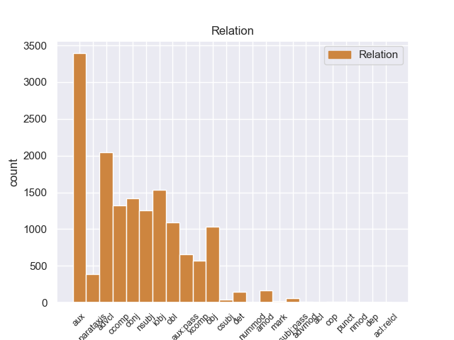
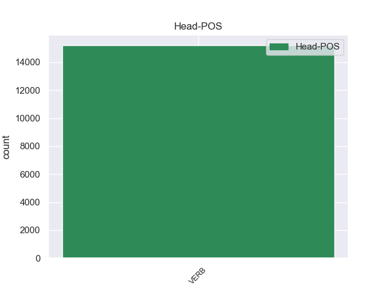
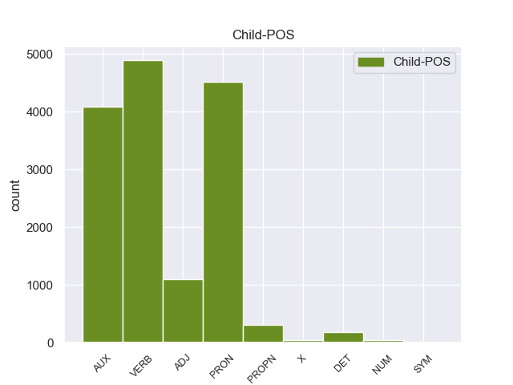

Distribution of features within this leaf



Agreement Rules sorted by frequency.
When the head token is VERB and the dependent token is VERB.
1 La _ _ _ _ 0 _ _ _
2 hidrocefalia _ _ _ _ 0 _ _ _
3 comunicante _ _ _ _ 0 _ _ _
4 ocurre _ _ _ _ 0 _ _ _
5 cuando _ _ _ _ 0 _ _ _
6 el _ _ _ _ 0 _ _ _
7 flujo _ _ _ _ 0 _ _ _
8 de _ _ _ _ 0 _ _ _
9 el _ _ _ _ 0 _ _ _
10 líquido _ _ _ _ 0 _ _ _
11 cefaloraquídeo _ _ _ _ 0 _ _ _
12 se _ _ _ _ 0 _ _ _
13 ve ver VERB _ Mood=Ind|Number=Sing|Person=3|Tense=Pres|VerbForm=Fin 0 _ _ _
14 bloqueado bloqueado VERB _ Gender=Masc|Number=Sing|VerbForm=Part 13 advcl _ _
15 después _ _ _ _ 0 _ _ _
16 de _ _ _ _ 0 _ _ _
17 salir _ _ _ _ 0 _ _ _
18 de _ _ _ _ 0 _ _ _
19 los _ _ _ _ 0 _ _ _
20 ventrículos _ _ _ _ 0 _ _ _
21 a _ _ _ _ 0 _ _ _
22 el _ _ _ _ 0 _ _ _
23 espacio _ _ _ _ 0 _ _ _
24 subaracnoideo _ _ _ _ 0 _ _ _
25 . _ _ _ _ 0 _ _ _
When the head token is VERB and the dependent token is VERB. and the head token is VERB and the dependent token is PRON.
1 Cada _ _ _ _ 0 _ _ _
2 uno uno PRON _ Gender=Masc|Number=Sing|PronType=Ind 3 nsubj _ _
3 presentará presentar VERB _ Mood=Ind|Number=Sing|Person=3|Tense=Fut|VerbForm=Fin 0 _ _ _
4 todas _ _ _ _ 0 _ _ _
5 las _ _ _ _ 0 _ _ _
6 obras _ _ _ _ 0 _ _ _
7 que _ _ _ _ 0 _ _ _
8 considere _ _ _ _ 0 _ _ _
9 oportunas _ _ _ _ 0 _ _ _
10 , _ _ _ _ 0 _ _ _
11 siendo _ _ _ _ 0 _ _ _
12 condición _ _ _ _ 0 _ _ _
13 imprescindible _ _ _ _ 0 _ _ _
14 que _ _ _ _ 0 _ _ _
15 éstas _ _ _ _ 0 _ _ _
16 sean _ _ _ _ 0 _ _ _
17 inéditas _ _ _ _ 0 _ _ _
18 . _ _ _ _ 0 _ _ _
When the head token is VERB and the dependent token is VERB. and the head token is VERB and the dependent token is PRON. and the head token is VERB and the dependent token is AUX.
1 La _ _ _ _ 0 _ _ _
2 totalidad _ _ _ _ 0 _ _ _
3 de _ _ _ _ 0 _ _ _
4 los _ _ _ _ 0 _ _ _
5 libros _ _ _ _ 0 _ _ _
6 de _ _ _ _ 0 _ _ _
7 cuentos _ _ _ _ 0 _ _ _
8 , _ _ _ _ 0 _ _ _
9 y _ _ _ _ 0 _ _ _
10 casi _ _ _ _ 0 _ _ _
11 todas _ _ _ _ 0 _ _ _
12 sus _ _ _ _ 0 _ _ _
13 novelas _ _ _ _ 0 _ _ _
14 ( _ _ _ _ 0 _ _ _
15 salvo _ _ _ _ 0 _ _ _
16 La _ _ _ _ 0 _ _ _
17 literatura _ _ _ _ 0 _ _ _
18 nazi _ _ _ _ 0 _ _ _
19 en _ _ _ _ 0 _ _ _
20 América _ _ _ _ 0 _ _ _
21 , _ _ _ _ 0 _ _ _
22 publicada _ _ _ _ 0 _ _ _
23 por _ _ _ _ 0 _ _ _
24 la _ _ _ _ 0 _ _ _
25 editorial _ _ _ _ 0 _ _ _
26 Seix _ _ _ _ 0 _ _ _
27 Barral _ _ _ _ 0 _ _ _
28 , _ _ _ _ 0 _ _ _
29 y _ _ _ _ 0 _ _ _
30 Consejos _ _ _ _ 0 _ _ _
31 de _ _ _ _ 0 _ _ _
32 un _ _ _ _ 0 _ _ _
33 discípulo _ _ _ _ 0 _ _ _
34 ... _ _ _ _ 0 _ _ _
35 , _ _ _ _ 0 _ _ _
36 reeditada _ _ _ _ 0 _ _ _
37 por _ _ _ _ 0 _ _ _
38 la _ _ _ _ 0 _ _ _
39 Editorial _ _ _ _ 0 _ _ _
40 Acantilado _ _ _ _ 0 _ _ _
41 ) _ _ _ _ 0 _ _ _
42 , _ _ _ _ 0 _ _ _
43 fue ser AUX _ Mood=Ind|Number=Sing|Person=3|Tense=Past|VerbForm=Fin 44 aux:pass _ _
44 publicada publicar VERB _ Gender=Fem|Number=Sing|Tense=Past|VerbForm=Part 0 _ _ _
45 por _ _ _ _ 0 _ _ _
46 Anagrama _ _ _ _ 0 _ _ _
47 . _ _ _ _ 0 _ _ _
When the head token is VERB and the dependent token is VERB. and the head token is VERB and the dependent token is PRON. and the head token is VERB and the dependent token is AUX. and the head token is VERB and the dependent token is ADJ.
1 Los _ _ _ _ 0 _ _ _
2 lápices _ _ _ _ 0 _ _ _
3 acuosos _ _ _ _ 0 _ _ _
4 pueden _ _ _ _ 0 _ _ _
5 ser _ _ _ _ 0 _ _ _
6 utilizados _ _ _ _ 0 _ _ _
7 en _ _ _ _ 0 _ _ _
8 seco _ _ _ _ 0 _ _ _
9 , _ _ _ _ 0 _ _ _
10 pero _ _ _ _ 0 _ _ _
11 a _ _ _ _ 0 _ _ _
12 el _ _ _ _ 0 _ _ _
13 estar _ _ _ _ 0 _ _ _
14 húmedos húmedo ADJ _ Gender=Masc|Number=Plur 15 amod _ _
15 adquieren adquirir VERB _ Mood=Ind|Number=Plur|Person=3|Tense=Pres|VerbForm=Fin 0 _ _ _
16 un _ _ _ _ 0 _ _ _
17 tono _ _ _ _ 0 _ _ _
18 especial _ _ _ _ 0 _ _ _
19 . _ _ _ _ 0 _ _ _
When the head token is VERB and the dependent token is VERB. and the head token is VERB and the dependent token is PRON. and the head token is VERB and the dependent token is AUX. and the head token is VERB and the dependent token is ADJ. and the head token is VERB and the dependent token is PROPN.
1 Van ir PROPN _ Gender=Masc|Number=Sing 3 nsubj _ _
2 Damme _ _ _ _ 0 _ _ _
3 coreografió coreografiar VERB _ Mood=Ind|Number=Sing|Person=3|Tense=Past|VerbForm=Fin 0 _ _ _
4 de _ _ _ _ 0 _ _ _
5 la _ _ _ _ 0 _ _ _
6 pelea _ _ _ _ 0 _ _ _
7 final _ _ _ _ 0 _ _ _
8 entre _ _ _ _ 0 _ _ _
9 su _ _ _ _ 0 _ _ _
10 personaje _ _ _ _ 0 _ _ _
11 y _ _ _ _ 0 _ _ _
12 el _ _ _ _ 0 _ _ _
13 personaje _ _ _ _ 0 _ _ _
14 de _ _ _ _ 0 _ _ _
15 Stallone _ _ _ _ 0 _ _ _
16 . _ _ _ _ 0 _ _ _
When the head token is VERB and the dependent token is VERB. and the head token is VERB and the dependent token is PRON. and the head token is VERB and the dependent token is AUX. and the head token is VERB and the dependent token is ADJ. and the head token is VERB and the dependent token is PROPN. and the head token is VERB and the dependent token is DET.
1 Los _ _ _ _ 0 _ _ _
2 viajeros _ _ _ _ 0 _ _ _
3 quedarán _ _ _ _ 0 _ _ _
4 atónitos _ _ _ _ 0 _ _ _
5 a _ _ _ _ 0 _ _ _
6 el el DET _ Definite=Def|Gender=Masc|Number=Sing|PronType=Art 7 det _ _
7 contemplar contemplar VERB _ Gender=Masc|Number=Sing|VerbForm=Fin 0 _ _ _
8 la _ _ _ _ 0 _ _ _
9 blanca _ _ _ _ 0 _ _ _
10 silueta _ _ _ _ 0 _ _ _
11 de _ _ _ _ 0 _ _ _
12 el _ _ _ _ 0 _ _ _
13 Hotel _ _ _ _ 0 _ _ _
14 Salto _ _ _ _ 0 _ _ _
15 Chico _ _ _ _ 0 _ _ _
16 recortar _ _ _ _ 0 _ _ _
17 se _ _ _ _ 0 _ _ _
18 sobre _ _ _ _ 0 _ _ _
19 el _ _ _ _ 0 _ _ _
20 poderoso _ _ _ _ 0 _ _ _
21 macizo _ _ _ _ 0 _ _ _
22 de _ _ _ _ 0 _ _ _
23 el _ _ _ _ 0 _ _ _
24 Paine _ _ _ _ 0 _ _ _
25 , _ _ _ _ 0 _ _ _
26 en _ _ _ _ 0 _ _ _
27 la _ _ _ _ 0 _ _ _
28 Patagonia _ _ _ _ 0 _ _ _
29 chilena _ _ _ _ 0 _ _ _
30 . _ _ _ _ 0 _ _ _
When the head token is VERB and the dependent token is VERB. and the head token is VERB and the dependent token is PRON. and the head token is VERB and the dependent token is AUX. and the head token is VERB and the dependent token is ADJ. and the head token is VERB and the dependent token is PROPN. and the head token is VERB and the dependent token is DET. and the head token is VERB and the dependent token is X.
1 A _ _ _ _ 0 _ _ _
2 estas _ _ _ _ 0 _ _ _
3 alturas _ _ _ _ 0 _ _ _
4 de _ _ _ _ 0 _ _ _
5 la _ _ _ _ 0 _ _ _
6 película _ _ _ _ 0 _ _ _
7 probablemente _ _ _ _ 0 _ _ _
8 ya _ _ _ _ 0 _ _ _
9 hayas _ _ _ _ 0 _ _ _
10 conseguido conseguir VERB _ Gender=Masc|Number=Sing|VerbForm=Part 0 _ _ _
11 convertir _ _ _ _ 0 _ _ _
12 a _ _ _ _ 0 _ _ _
13 tu _ _ _ _ 0 _ _ _
14 flamante _ _ _ _ 0 _ _ _
15 Windows _ _ _ _ 0 _ _ _
16 Phone _ _ _ _ 0 _ _ _
17 7 _ _ _ _ 0 _ _ _
18 en _ _ _ _ 0 _ _ _
19 un _ _ _ _ 0 _ _ _
20 pendrive pendrive X _ Gender=Masc|Number=Sing 10 obl _ _
21 XXL _ _ _ _ 0 _ _ _
22 para _ _ _ _ 0 _ _ _
23 dar _ _ _ _ 0 _ _ _
24 cabida _ _ _ _ 0 _ _ _
25 a _ _ _ _ 0 _ _ _
26 todo _ _ _ _ 0 _ _ _
27 cuanto _ _ _ _ 0 _ _ _
28 se _ _ _ _ 0 _ _ _
29 te _ _ _ _ 0 _ _ _
30 antoje _ _ _ _ 0 _ _ _
31 , _ _ _ _ 0 _ _ _
32 así _ _ _ _ 0 _ _ _
33 que _ _ _ _ 0 _ _ _
34 ¿ _ _ _ _ 0 _ _ _
35 por _ _ _ _ 0 _ _ _
36 qué _ _ _ _ 0 _ _ _
37 no _ _ _ _ 0 _ _ _
38 ampliar _ _ _ _ 0 _ _ _
39 también _ _ _ _ 0 _ _ _
40 la _ _ _ _ 0 _ _ _
41 hazaña _ _ _ _ 0 _ _ _
42 a _ _ _ _ 0 _ _ _
43 las _ _ _ _ 0 _ _ _
44 aplicaciones _ _ _ _ 0 _ _ _
45 que _ _ _ _ 0 _ _ _
46 no _ _ _ _ 0 _ _ _
47 han _ _ _ _ 0 _ _ _
48 logrado _ _ _ _ 0 _ _ _
49 hacer _ _ _ _ 0 _ _ _
50 se _ _ _ _ 0 _ _ _
51 con _ _ _ _ 0 _ _ _
52 un _ _ _ _ 0 _ _ _
53 hueco _ _ _ _ 0 _ _ _
54 en _ _ _ _ 0 _ _ _
55 el _ _ _ _ 0 _ _ _
56 Marketplace _ _ _ _ 0 _ _ _
57 ? _ _ _ _ 0 _ _ _
When the head token is VERB and the dependent token is VERB. and the head token is VERB and the dependent token is PRON. and the head token is VERB and the dependent token is AUX. and the head token is VERB and the dependent token is ADJ. and the head token is VERB and the dependent token is PROPN. and the head token is VERB and the dependent token is DET. and the head token is VERB and the dependent token is X. and the head token is VERB and the dependent token is NUM.
1 El _ _ _ _ 0 _ _ _
2 7 _ _ _ _ 0 _ _ _
3 de _ _ _ _ 0 _ _ _
4 agosto _ _ _ _ 0 _ _ _
5 de _ _ _ _ 0 _ _ _
6 2010 _ _ _ _ 0 _ _ _
7 , _ _ _ _ 0 _ _ _
8 un _ _ _ _ 0 _ _ _
9 impacto _ _ _ _ 0 _ _ _
10 de _ _ _ _ 0 _ _ _
11 un _ _ _ _ 0 _ _ _
12 Explosivo _ _ _ _ 0 _ _ _
13 Improvisado _ _ _ _ 0 _ _ _
14 a _ _ _ _ 0 _ _ _
15 un _ _ _ _ 0 _ _ _
16 CV9035DK _ _ _ _ 0 _ _ _
17 en _ _ _ _ 0 _ _ _
18 Afganistán _ _ _ _ 0 _ _ _
19 dejó _ _ _ _ 0 _ _ _
20 como _ _ _ _ 0 _ _ _
21 saldo _ _ _ _ 0 _ _ _
22 que _ _ _ _ 0 _ _ _
23 dos dos NUM _ Number=Plur|NumType=Card 33 nsubj _ _
24 de _ _ _ _ 0 _ _ _
25 los _ _ _ _ 0 _ _ _
26 soldados _ _ _ _ 0 _ _ _
27 que _ _ _ _ 0 _ _ _
28 tripulaban _ _ _ _ 0 _ _ _
29 uno _ _ _ _ 0 _ _ _
30 de _ _ _ _ 0 _ _ _
31 estos _ _ _ _ 0 _ _ _
32 blindados _ _ _ _ 0 _ _ _
33 murieran murir VERB _ Mood=Sub|Number=Plur|Person=3|Tense=Imp|VerbForm=Fin 0 _ _ _
34 y _ _ _ _ 0 _ _ _
35 3 _ _ _ _ 0 _ _ _
36 resultaran _ _ _ _ 0 _ _ _
37 heridos _ _ _ _ 0 _ _ _
38 . _ _ _ _ 0 _ _ _
When the head token is VERB and the dependent token is VERB. and the head token is VERB and the dependent token is PRON. and the head token is VERB and the dependent token is AUX. and the head token is VERB and the dependent token is ADJ. and the head token is VERB and the dependent token is PROPN. and the head token is VERB and the dependent token is DET. and the head token is VERB and the dependent token is X. and the head token is VERB and the dependent token is NUM. and the head token is VERB and the dependent token is SYM.
1 Según _ _ _ _ 0 _ _ _
2 la _ _ _ _ 0 _ _ _
3 Oficina _ _ _ _ 0 _ _ _
4 de _ _ _ _ 0 _ _ _
5 el _ _ _ _ 0 _ _ _
6 Censo _ _ _ _ 0 _ _ _
7 en _ _ _ _ 0 _ _ _
8 2000 _ _ _ _ 0 _ _ _
9 los _ _ _ _ 0 _ _ _
10 ingresos _ _ _ _ 0 _ _ _
11 medios _ _ _ _ 0 _ _ _
12 por _ _ _ _ 0 _ _ _
13 hogar _ _ _ _ 0 _ _ _
14 en _ _ _ _ 0 _ _ _
15 la _ _ _ _ 0 _ _ _
16 localidad _ _ _ _ 0 _ _ _
17 eran ser VERB _ Mood=Ind|Number=Plur|Person=3|Tense=Imp|VerbForm=Fin 0 _ _ _
18 de _ _ _ _ 0 _ _ _
19 $ _ _ _ _ 0 _ _ _
20 47,500 _ _ _ _ 0 _ _ _
21 y _ _ _ _ 0 _ _ _
22 los _ _ _ _ 0 _ _ _
23 ingresos _ _ _ _ 0 _ _ _
24 medios _ _ _ _ 0 _ _ _
25 por _ _ _ _ 0 _ _ _
26 familia _ _ _ _ 0 _ _ _
27 eran _ _ _ _ 0 _ _ _
28 $ $ SYM _ Gender=Masc|Number=Plur|VerbForm=Part 17 conj _ _
29 54,663 _ _ _ _ 0 _ _ _
30 . _ _ _ _ 0 _ _ _
Disagree Examples:
1 Por _ _ _ _ 0 _ _ _
2 último _ _ _ _ 0 _ _ _
3 , _ _ _ _ 0 _ _ _
4 quisiéramos _ _ _ _ 0 _ _ _
5 instar _ _ _ _ 0 _ _ _
6 a _ _ _ _ 0 _ _ _
7 los _ _ _ _ 0 _ _ _
8 diputados _ _ _ _ 0 _ _ _
9 a _ _ _ _ 0 _ _ _
10 que _ _ _ _ 0 _ _ _
11 voten votar VERB _ Mood=Ind|Number=Plur|Person=3|Tense=Pres|VerbForm=Fin 0 _ _ _
12 en _ _ _ _ 0 _ _ _
13 contra _ _ _ _ 0 _ _ _
14 de _ _ _ _ 0 _ _ _
15 la _ _ _ _ 0 _ _ _
16 enmienda _ _ _ _ 0 _ _ _
17 41 _ _ _ _ 0 _ _ _
18 , _ _ _ _ 0 _ _ _
19 en _ _ _ _ 0 _ _ _
20 particular _ _ _ _ 0 _ _ _
21 , _ _ _ _ 0 _ _ _
22 relativa relativo VERB _ Mood=Ind|Number=Sing|Person=3|Tense=Pres|VerbForm=Fin 11 parataxis _ _
23 a _ _ _ _ 0 _ _ _
24 los _ _ _ _ 0 _ _ _
25 requisitos _ _ _ _ 0 _ _ _
26 de _ _ _ _ 0 _ _ _
27 capital _ _ _ _ 0 _ _ _
28 , _ _ _ _ 0 _ _ _
29 porque _ _ _ _ 0 _ _ _
30 consideramos _ _ _ _ 0 _ _ _
31 que _ _ _ _ 0 _ _ _
32 serían _ _ _ _ 0 _ _ _
33 muy _ _ _ _ 0 _ _ _
34 perjudiciales _ _ _ _ 0 _ _ _
35 para _ _ _ _ 0 _ _ _
36 el _ _ _ _ 0 _ _ _
37 sector _ _ _ _ 0 _ _ _
38 . _ _ _ _ 0 _ _ _
1 Por _ _ _ _ 0 _ _ _
2 último _ _ _ _ 0 _ _ _
3 , _ _ _ _ 0 _ _ _
4 quisiéramos _ _ _ _ 0 _ _ _
5 instar _ _ _ _ 0 _ _ _
6 a _ _ _ _ 0 _ _ _
7 los _ _ _ _ 0 _ _ _
8 diputados _ _ _ _ 0 _ _ _
9 a _ _ _ _ 0 _ _ _
10 que _ _ _ _ 0 _ _ _
11 voten _ _ _ _ 0 _ _ _
12 en _ _ _ _ 0 _ _ _
13 contra _ _ _ _ 0 _ _ _
14 de _ _ _ _ 0 _ _ _
15 la _ _ _ _ 0 _ _ _
16 enmienda _ _ _ _ 0 _ _ _
17 41 _ _ _ _ 0 _ _ _
18 , _ _ _ _ 0 _ _ _
19 en _ _ _ _ 0 _ _ _
20 particular _ _ _ _ 0 _ _ _
21 , _ _ _ _ 0 _ _ _
22 relativa relativo VERB _ Mood=Ind|Number=Sing|Person=3|Tense=Pres|VerbForm=Fin 0 _ _ _
23 a _ _ _ _ 0 _ _ _
24 los _ _ _ _ 0 _ _ _
25 requisitos _ _ _ _ 0 _ _ _
26 de _ _ _ _ 0 _ _ _
27 capital _ _ _ _ 0 _ _ _
28 , _ _ _ _ 0 _ _ _
29 porque _ _ _ _ 0 _ _ _
30 consideramos considerar VERB _ Mood=Ind|Number=Plur|Person=1|Tense=Pres|VerbForm=Fin 22 advcl _ _
31 que _ _ _ _ 0 _ _ _
32 serían _ _ _ _ 0 _ _ _
33 muy _ _ _ _ 0 _ _ _
34 perjudiciales _ _ _ _ 0 _ _ _
35 para _ _ _ _ 0 _ _ _
36 el _ _ _ _ 0 _ _ _
37 sector _ _ _ _ 0 _ _ _
38 . _ _ _ _ 0 _ _ _
1 El _ _ _ _ 0 _ _ _
2 tercero _ _ _ _ 0 _ _ _
3 es ser VERB _ Mood=Ind|Number=Sing|Person=3|Tense=Pres|VerbForm=Fin 0 _ _ _
4 « _ _ _ _ 0 _ _ _
5 esperemos esperer VERB _ Mood=Ind|Number=Plur|Person=1|Tense=Pres|VerbForm=Fin 3 conj _ SpaceAfter=No
6 , _ _ _ _ 0 _ _ _
7 las _ _ _ _ 0 _ _ _
8 cosas _ _ _ _ 0 _ _ _
9 cambiarán _ _ _ _ 0 _ _ _
10 poco _ _ _ _ 0 _ _ _
11 a _ _ _ _ 0 _ _ _
12 poco _ _ _ _ 0 _ _ _
13 » _ _ _ _ 0 _ _ _
14 . _ _ _ _ 0 _ _ _
1 El _ _ _ _ 0 _ _ _
2 tercero _ _ _ _ 0 _ _ _
3 es ser VERB _ Mood=Ind|Number=Sing|Person=3|Tense=Pres|VerbForm=Fin 0 _ _ _
4 « _ _ _ _ 0 _ _ _
5 esperemos _ _ _ _ 0 _ _ _
6 , _ _ _ _ 0 _ _ _
7 las _ _ _ _ 0 _ _ _
8 cosas _ _ _ _ 0 _ _ _
9 cambiarán cambiar VERB _ Mood=Ind|Number=Plur|Person=3|Tense=Fut|VerbForm=Fin 3 conj _ _
10 poco _ _ _ _ 0 _ _ _
11 a _ _ _ _ 0 _ _ _
12 poco _ _ _ _ 0 _ _ _
13 » _ _ _ _ 0 _ _ _
14 . _ _ _ _ 0 _ _ _
1 Si _ _ _ _ 0 _ _ _
2 será _ _ _ _ 0 _ _ _
3 más _ _ _ _ 0 _ _ _
4 elevada _ _ _ _ 0 _ _ _
5 que _ _ _ _ 0 _ _ _
6 la _ _ _ _ 0 _ _ _
7 anterior _ _ _ _ 0 _ _ _
8 , _ _ _ _ 0 _ _ _
9 significará _ _ _ _ 0 _ _ _
10 que _ _ _ _ 0 _ _ _
11 habremos habrer AUX _ Mood=Ind|Number=Plur|Person=1|Tense=Pres|VerbForm=Fin 12 aux _ _
12 hecho hacer VERB _ Gender=Masc|Number=Sing|Tense=Past|VerbForm=Part 0 _ _ _
13 frente _ _ _ _ 0 _ _ _
14 a _ _ _ _ 0 _ _ _
15 nuestro _ _ _ _ 0 _ _ _
16 reto _ _ _ _ 0 _ _ _
17 . _ _ _ _ 0 _ _ _